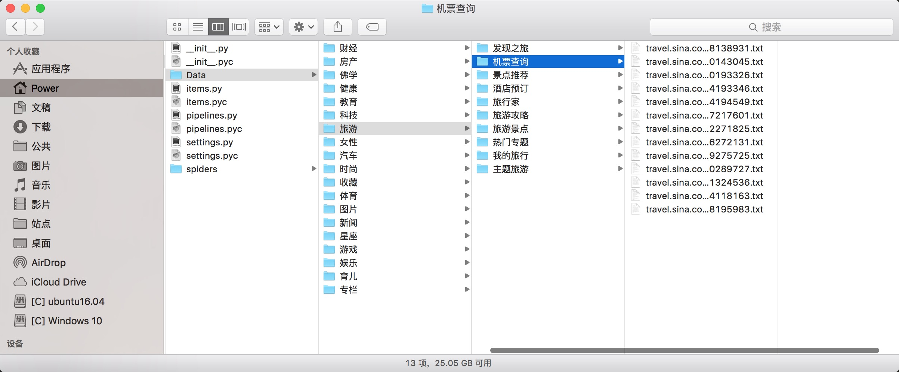

新浪网分类资讯爬虫
思考：如何将已有的Scrapy爬虫项目，改写成scrapy-redis分布式爬虫。
要求：将所有对应的大类的 标题和urls、小类的 标题和urls、子链接url、文章名以及文章内容，存入Redis数据库。

以下为原Scrapy爬虫项目源码：
items.py
# -*- coding: utf-8 -*-
import scrapy
import sys
reload(sys)
sys.setdefaultencoding("utf-8")
class SinaItem(scrapy.Item):
# 大类的标题 和 url
parentTitle = scrapy.Field()
parentUrls = scrapy.Field()
# 小类的标题 和 子url
subTitle = scrapy.Field()
subUrls = scrapy.Field()
# 小类目录存储路径
subFilename = scrapy.Field()
# 小类下的子链接
sonUrls = scrapy.Field()
# 文章标题和内容
head = scrapy.Field()
content = scrapy.Field()
pipelines.py
# -*- coding: utf-8 -*-
from scrapy import signals
import sys
reload(sys)
sys.setdefaultencoding("utf-8")
class SinaPipeline(object):
def process_item(self, item, spider):
sonUrls = item['sonUrls']
# 文件名为子链接url中间部分，并将 / 替换为 _，保存为 .txt格式
filename = sonUrls[7:-6].replace('/','_')
filename += ".txt"
fp = open(item['subFilename']+'/'+filename, 'w')
fp.write(item['content'])
fp.close()
return item
settings.py
# -*- coding: utf-8 -*-
BOT_NAME = 'Sina'
SPIDER_MODULES = ['Sina.spiders']
NEWSPIDER_MODULE = 'Sina.spiders'
ITEM_PIPELINES = {
'Sina.pipelines.SinaPipeline': 300,
}
LOG_LEVEL = 'DEBUG'
spiders/sina.py
# -*- coding: utf-8 -*-
from Sina.items import SinaItem
import scrapy
import os
import sys
reload(sys)
sys.setdefaultencoding("utf-8")
class SinaSpider(scrapy.Spider):
name= "sina"
allowed_domains= ["sina.com.cn"]
start_urls= [
"http://news.sina.com.cn/guide/"
]
def parse(self, response):
items= []
# 所有大类的url 和 标题
parentUrls = response.xpath('//div[@id=\"tab01\"]/div/h3/a/@href').extract()
parentTitle = response.xpath("//div[@id=\"tab01\"]/div/h3/a/text()").extract()
# 所有小类的ur 和 标题
subUrls = response.xpath('//div[@id=\"tab01\"]/div/ul/li/a/@href').extract()
subTitle = response.xpath('//div[@id=\"tab01\"]/div/ul/li/a/text()').extract()
#爬取所有大类
for i in range(0, len(parentTitle)):
# 指定大类目录的路径和目录名
parentFilename = "./Data/" + parentTitle[i]
#如果目录不存在，则创建目录
if(not os.path.exists(parentFilename)):
os.makedirs(parentFilename)
# 爬取所有小类
for j in range(0, len(subUrls)):
item = SinaItem()
# 保存大类的title和urls
item['parentTitle'] = parentTitle[i]
item['parentUrls'] = parentUrls[i]
# 检查小类的url是否以同类别大类url开头，如果是返回True (sports.sina.com.cn 和 sports.sina.com.cn/nba)
if_belong = subUrls[j].startswith(item['parentUrls'])
# 如果属于本大类，将存储目录放在本大类目录下
if(if_belong):
subFilename =parentFilename + '/'+ subTitle[j]
# 如果目录不存在，则创建目录
if(not os.path.exists(subFilename)):
os.makedirs(subFilename)
# 存储 小类url、title和filename字段数据
item['subUrls'] = subUrls[j]
item['subTitle'] =subTitle[j]
item['subFilename'] = subFilename
items.append(item)
#发送每个小类url的Request请求，得到Response连同包含meta数据 一同交给回调函数 second_parse 方法处理
for item in items:
yield scrapy.Request( url = item['subUrls'], meta={'meta_1': item}, callback=self.second_parse)
#对于返回的小类的url，再进行递归请求
def second_parse(self, response):
# 提取每次Response的meta数据
meta_1= response.meta['meta_1']
# 取出小类里所有子链接
sonUrls = response.xpath('//a/@href').extract()
items= []
for i in range(0, len(sonUrls)):
# 检查每个链接是否以大类url开头、以.shtml结尾，如果是返回True
if_belong = sonUrls[i].endswith('.shtml') and sonUrls[i].startswith(meta_1['parentUrls'])
# 如果属于本大类，获取字段值放在同一个item下便于传输
if(if_belong):
item = SinaItem()
item['parentTitle'] =meta_1['parentTitle']
item['parentUrls'] =meta_1['parentUrls']
item['subUrls'] = meta_1['subUrls']
item['subTitle'] = meta_1['subTitle']
item['subFilename'] = meta_1['subFilename']
item['sonUrls'] = sonUrls[i]
items.append(item)
#发送每个小类下子链接url的Request请求，得到Response后连同包含meta数据 一同交给回调函数 detail_parse 方法处理
for item in items:
yield scrapy.Request(url=item['sonUrls'], meta={'meta_2':item}, callback = self.detail_parse)
# 数据解析方法，获取文章标题和内容
def detail_parse(self, response):
item = response.meta['meta_2']
content = ""
head = response.xpath('//h1[@id=\"main_title\"]/text()')
content_list = response.xpath('//div[@id=\"artibody\"]/p/text()').extract()
# 将p标签里的文本内容合并到一起
for content_one in content_list:
content += content_one
item['head']= head
item['content']= content
yield item
执行：
scrapy crawl sina